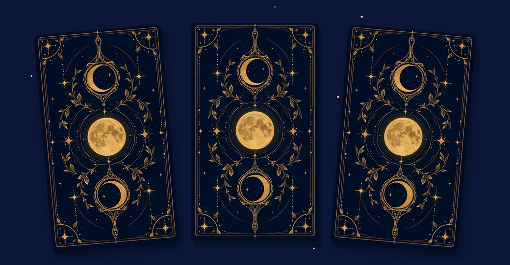
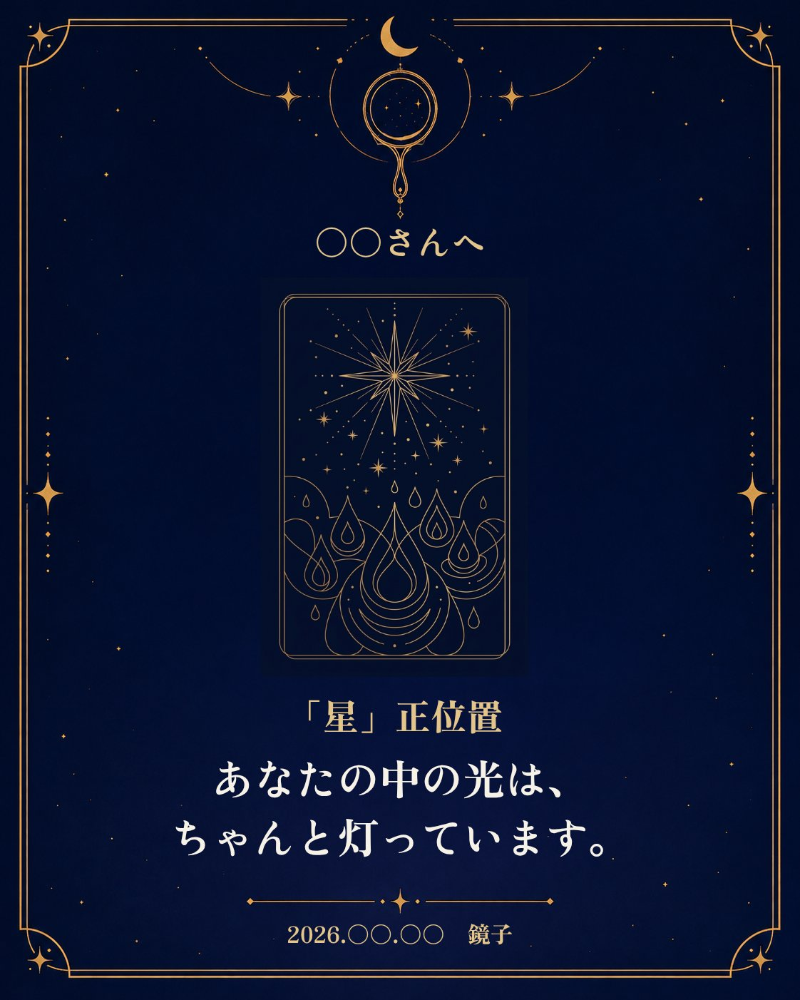
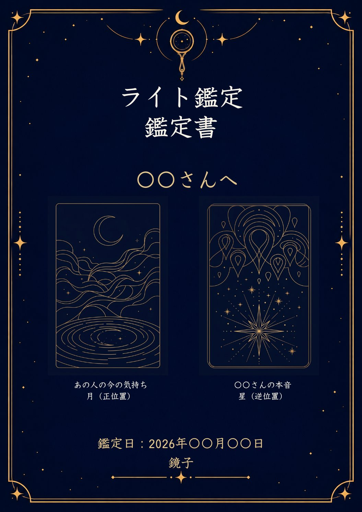

鏡kagamiko_tarot
【新しい一週間、あの人を想って心に浮かぶのは】
週のはじまり、ふと、あの人のことを考える。
あなたの心に浮かぶのは、どれですか？
- A今週こそ、会えたらいいな
- B声が聞きたい
- Cこの気持ち、どうしたらいいんだろう
- D何も変わらないまま、また一週間が始まる
記号だけでも大丈夫です。
閲覧 939いいね 41コメント 136
恋愛タロット|鏡子
あの人のことを考えて、眠れない夜。
返事の来ないスマホを、
何度も開いてしまう夜。
好きになってはいけない人を、
好きになった夜。

伏せた3枚から、直感で1枚。
今のあなたの恋に、言葉が届きます。
無料・ニックネームのままで受け取れます
Every morning
Threadsでは毎朝、今の気持ちに近いものを選ぶ投稿をしています。記号ひとつで参加できて、一人ひとりに言葉を返しています。
【新しい一週間、あの人を想って心に浮かぶのは】
週のはじまり、ふと、あの人のことを考える。
あなたの心に浮かぶのは、どれですか？
記号だけでも大丈夫です。
閲覧 939いいね 41コメント 136
2026年11月16日（月）の実際の投稿と返信より
On LINE
毎日届くことはありません。必要なときに、立ち寄ってください。
伏せた3枚から1枚選ぶと、今のあなたの恋への言葉が届きます。カードは、新月ごとに入れ替わります。
あなたのために1枚引いて、あの人の気持ちを言葉にする無料鑑定です。不定期・先着順で、Threadsより先にLINEでお知らせします。
満月の夜にだけ届く、LINE限定のメッセージです。
ニックネームのままで、誰にも知られずに受け取れます
What arrives
カードは1枚ずつ、手で引いています。届くのは、カードの絵だけではありません。あなたのために引いたカードから見えたことを、あなたのためだけの言葉にしてお届けします。
あなたのために引いた1枚から、あの人の気持ちを3つの層で言葉にします。
そして、カードに映った、あなた自身の良いところも。
2枚のカードそれぞれを、1枚ずつページを分けて言葉にします。
最後に、あなたへのお守りの言葉を添えます。
お届けするものの一部（見本）


お名前と日付は伏せています。
Voices
「自分の幸せは、自分で決めていいんですね」
「最後の『幸せの形は、自分自身が決めていいもの』という言葉が、心に残りました」
無料鑑定とライト鑑定を受けてくださった方
For deeper nights
あの人の気持ちを、もっと深く知りたいときのための鑑定です。知りたいことの深さで、選んでください。
This place is for you
カードは、1枚1枚、手で引いています。
答えを押しつけることはしません。どうするかを選ぶのは、いつもあなたです。
あの人の心を決めつけることもしません。カードが映す可能性として、言葉にしてお伝えします。
うまく言葉にできなくても、まとまっていなくても大丈夫です。そのままの気持ちを、置いていってください。
Questions
いいえ、毎日届くことはありません。満月の夜の言葉や、鏡の間のお知らせなど、ときどき届くだけです。今月のカードは、引きたいときにご自身で引けます。
はい。本名をお伝えいただく必要はありません。やりとりが誰かに知られることもありません。
あの人の心を決めつけることはしません。カードが映す可能性として、あの人の気持ちを言葉にしてお伝えします。どう受け取るかは、あなたが選んでください。
いいえ。カードは1枚1枚、手で引いています。カードを読み、あなたに届ける言葉を生み出しているのは、鏡子自身です。文章を整えたり画像を作ったりするときに、AIをサポートとして使うことはあります。
いいえ、こちらからおすすめすることはありません。また話したくなったときに、ご自身のタイミングで選んでください。